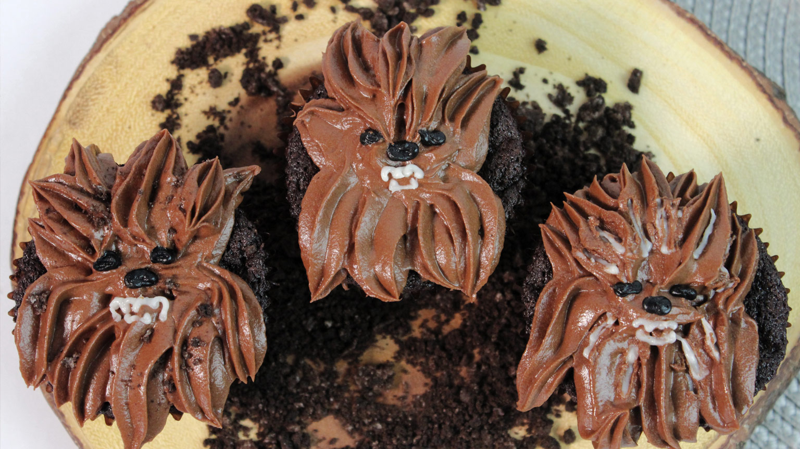

Wookie Cookie Brownies

BROWNIE INGREDIENTS:
- 2/3 cup cocoa powder
- 1/2 cup brown sugar
- 1/2 cup granulated sugar
- 1/3 cup all purpose flour
- 1/2 teaspoon baking soda
- 1/2 teaspoon salt
- 1/2 cup (1 stick) unsalted butter, melted
- 2 eggs, lightly beaten
- 1/2 teaspoon vanilla
- 9 chocolate sandwich cookies
FROSTING INGREDIENTS:
- 6 tablespoons unsalted butter, softened
- 2 cups powdered sugar
- 1/3 cup cocoa powder
- 1 teaspoon vanilla
- 1/4 teaspoon cinnamon
- 1/4 teaspoon salt
- 1/4 cup whole milk, as needed
- Black icing, for decorating
- White icing, for decorating
STEPS:
- Preheat the oven to 350 degrees. Prep a muffin pan with 9 liners.
- In a bowl, whisk together cocoa powder, brown sugar, granulated sugar, flour, baking soda, and salt.
- Make a well in the center of the dry ingredients and stir in butter, eggs, and vanilla, until just combined.
- Pour a tablespoonful batter into the prepped liners. Place a cookie on top, then cover with more batter, covering the cookie completely.
- Bake for 18 minutes. Let cool on a wire rack.
- In a bowl, use a handheld mixer to cream the butter and powdered sugar.
- Add the cocoa powder, vanilla, cinnamon, and salt.
- Add the milk until you get a thick but pipeable consistency.
- Spoon the frosting into a piping bag. With a large star piping tip, start at the top and pull upwards to form the forehead. Then pipe from the middle out all around the brownie to complete the rest of the fur.
- Use the black and white icings to create the face details.
- Once the icing is dry the brownies are ready to serve.
Thanks goes to Admiral Achbars Snack Bar. Its not a trap! https://www.starwars.com/news/wookiee-cookie-brownies